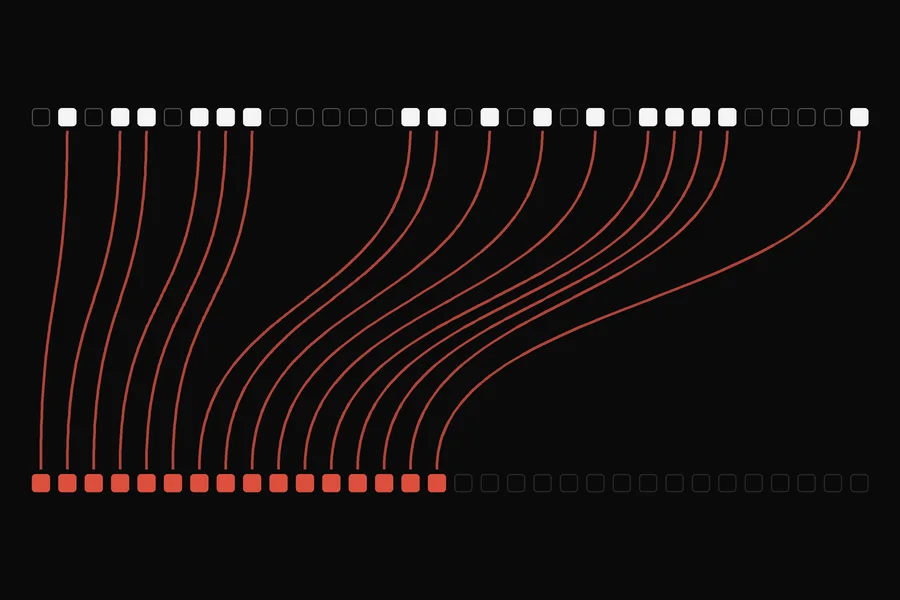
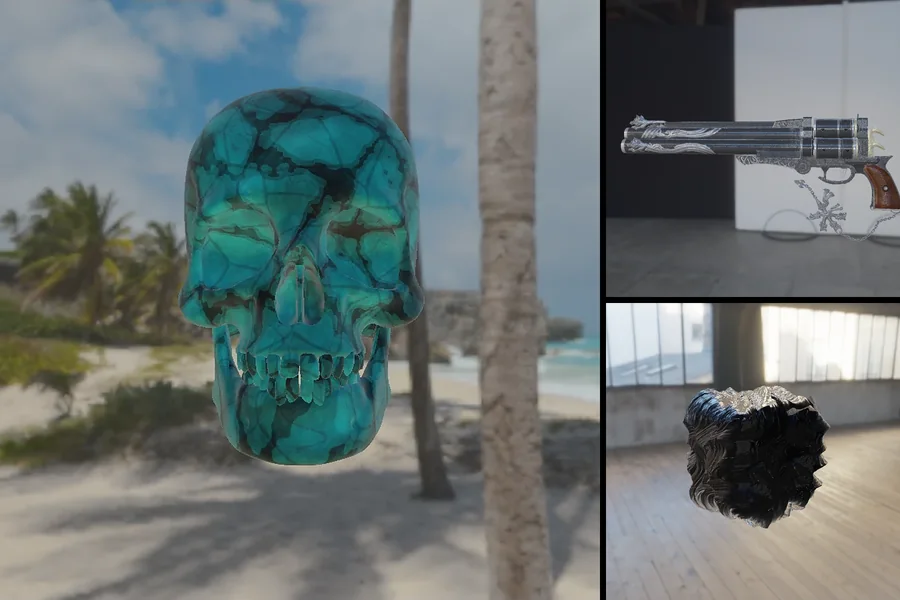
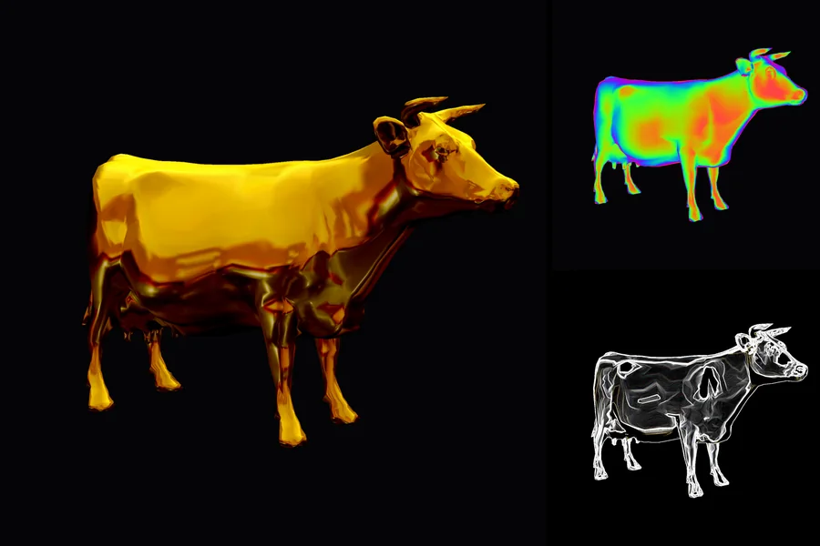
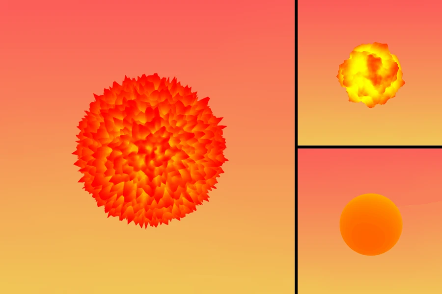
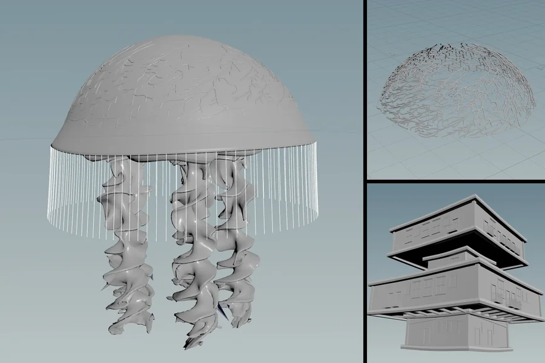
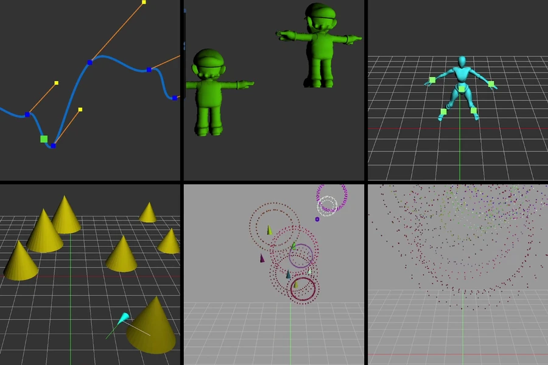
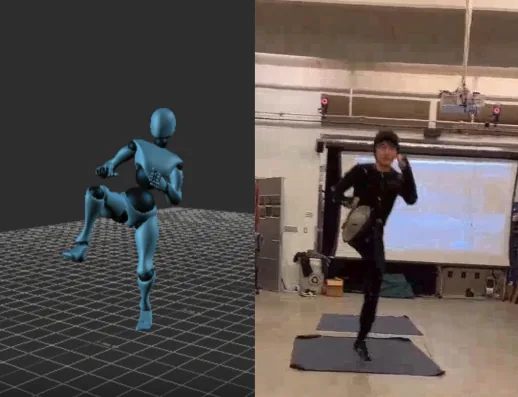
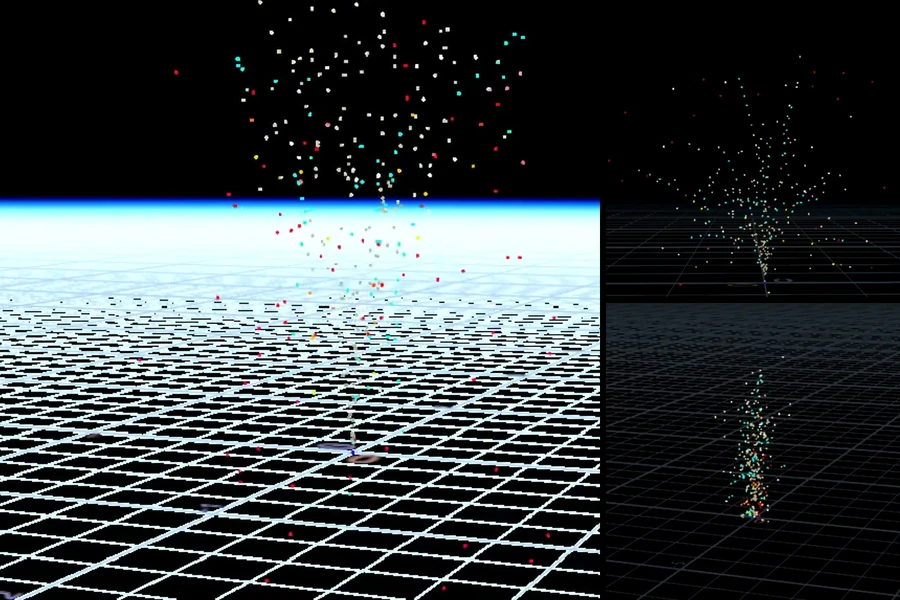

2026
Jichu Mao
Graphics Performance Engineer at TikTok
I work on real-time rendering and GPU performance. This site is my hub for art, CG and games: the renderers, shaders, tools and games I’ve built along the way.
Portfolio
Selected Works
Renderers, shaders, tools, games and animation. Open a project for demos, renders and source code.
-

World-Space ReSTIR in Vulkan
World-space global illumination in a Vulkan ray-tracing pipeline. About 40% more accurate than screen-space ReSTIR in large scenes, for roughly 5% more render time.
-

CUDA Path Tracer
A GPU path tracer in CUDA with glTF scenes, physically based materials, depth of field and environment lighting. Stream compaction cuts frame time from 25.7 to 18.2 ms in open scenes.
-

WebGPU Forward+ and Clustered Deferred Shading
Forward+ and clustered deferred shading in the browser. With 5,000 moving lights at 4K, clustered deferred runs above 100 fps where naive forward shading manages 3.
-

Vulkan Grass Rendering
Real-time grass in Vulkan. A compute shader simulates and culls every blade; with 32,768 blades, culling lifts the frame rate from 70 to 228 fps.
-

CUDA Flocking
Reynolds’ boids simulated on the GPU with CUDA. A coherent uniform grid runs 100,000 boids at 2,677 fps where brute force manages 43.
-

CUDA Stream Compaction
Scan and stream compaction on the GPU in CUDA, profiled with Nsight Compute. The work-efficient scan handles 134 million elements in 26 ms; the CPU needs 190.
-

Physically-Based Shaders
Physically based shading in OpenGL: a Cook-Torrance BRDF with image-based lighting, plus metallic, roughness, normal-map and displacement controls.
-

Mini Minecraft
A Minecraft-like game in C++ and OpenGL with no game engine. I built the procedural terrain, the biomes, texture animation and shape-grammar buildings.
-

Monte Carlo Path Tracer
A Monte Carlo path tracer in C++ and GLSL with naive, direct-lighting and multiple-importance-sampling integrators, and BRDF / BTDF materials with Fresnel.
-

GLSL Shaders
Vertex and fragment shaders for OpenGL: Blinn-Phong lighting, matcaps, vertex deformation, and post-process effects such as bloom, blur, Sobel edges and Worley noise.
-

Procedural Fireball
A WebGL fireball shaped by 3D Perlin noise and FBM, with live controls for colour, amplitude and frequency. It runs in the browser.
-

Stylized 3D Scene in Unity
A stylized real-time scene in Unity after concept art from the game GRIS: rim lighting, textured shadows, animated colours, Sobel outlines and ACES tone mapping.
-

Tree Creator – Plugin for Maya & Houdini
Two plugins, one for Maya and one for Houdini, that grow fractal plants from an L-system grammar the user writes.
-

Procedural Jellyfish and Buildings in Houdini
A jellyfish modelled and animated procedurally in Houdini, and a digital asset that generates multi-floor buildings with adjustable windows, doors and balconies.
-

Animation Toolkit
An interactive animation toolkit: curve and rotation editors, forward and inverse kinematics, particle systems with fireworks, and behavioural animation.
-

Gem Match Game
A classic gem puzzle game in C++ with Qt Widgets and the Easy2D engine. I wrote the client logic and the gem animations.
-

Maya 3D Scene Modeling Project
A bedroom modelled, textured and lit in Maya 2024.
-

Motion Capture
Motion capture recorded at UPenn’s SIG Lab and finished in MotionBuilder: three actions cleaned up and blended into one animation.
-

Houdini-based Fireworks Simulation
A fireworks physics simulation in Houdini: particle simulations shaped by bounce and wind, attractive, repulsive and interparticle forces.
About me
Jichu Mao
Hi! I’m Jichu! I am really glad that you have come to my website!
I’m a Graphics Performance Engineer at TikTok, optimizing its real-time effect rendering engine. I graduated from the University of Pennsylvania (UPenn) in May 2026 with a master’s in Computer Science & Computer Graphics.
Before that, I interned at TikTok, Infold Games, Apple Inc. and the University of Alberta, and was a teaching assistant for UPenn’s computer graphics courses. During my studies in Software Engineering and Computer Graphics, I designed & developed various interesting games and software toolkits.
I have shared my previous works here, and I will be really excited if you like it! <3
Away from the GPU I take photographs: landscapes, cities after dark and the odd portrait. See the photographs.
Read more